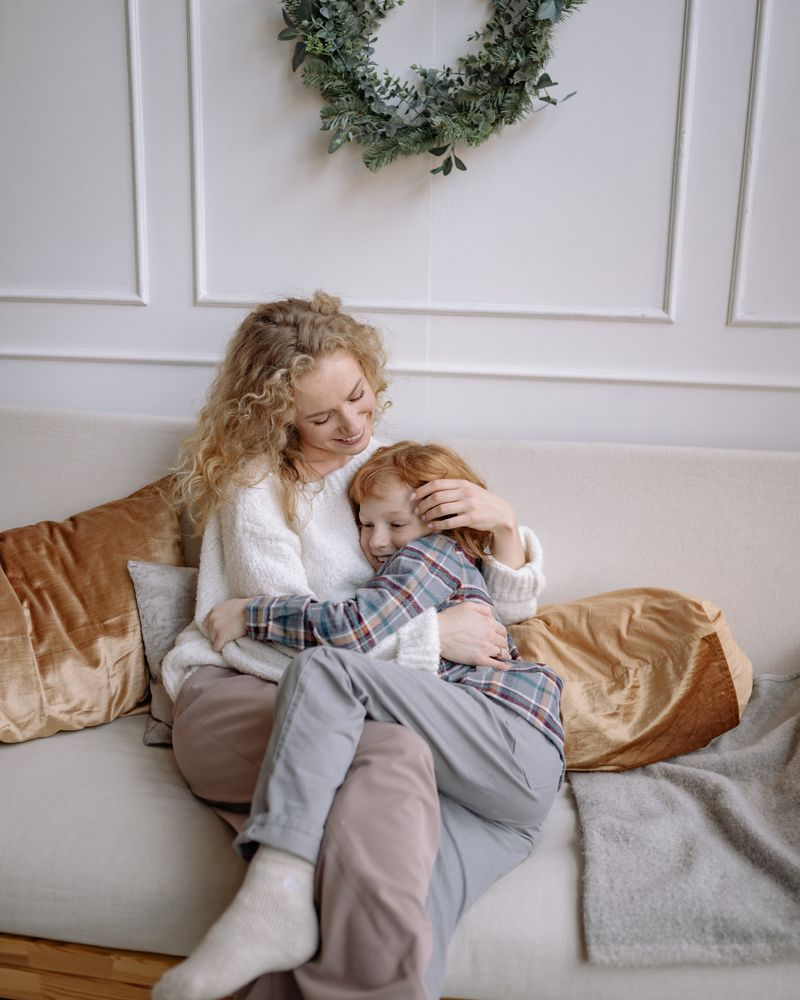
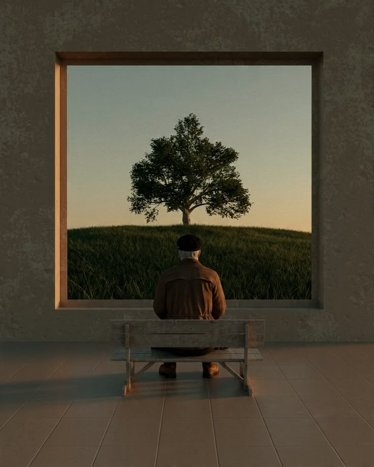
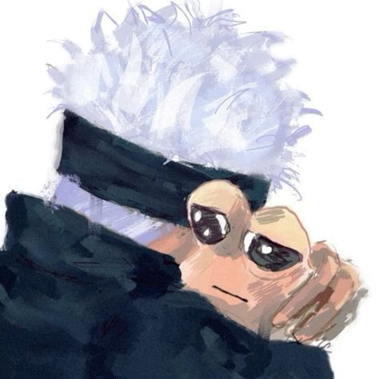

Proyecto Informativo
Entendiendo la Ansiedad
La ansiedad es una respuesta natural del cuerpo ante el estrés o el peligro. Sin embargo, cuando se vuelve constante, puede afectar nuestra calidad de vida. Descubre qué es y cómo manejarla.



Conceptos Básicos
¿Cómo nos afecta?
Nivel Físico
El cuerpo se prepara para luchar o huir, provocando taquicardia, tensión muscular y fatiga.
Nivel Mental
Aparecen pensamientos acelerados, preocupación excesiva por el futuro y dificultad para concentrarse.
Nivel Emocional
Se experimenta sensación de peligro inminente, irritabilidad y sentimientos de vacío o miedo constante.